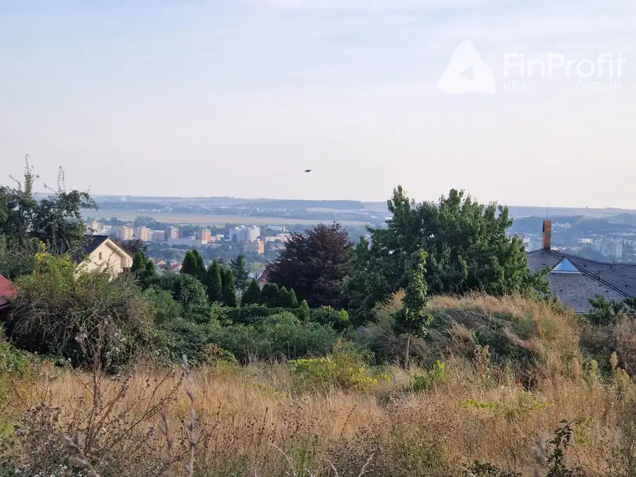
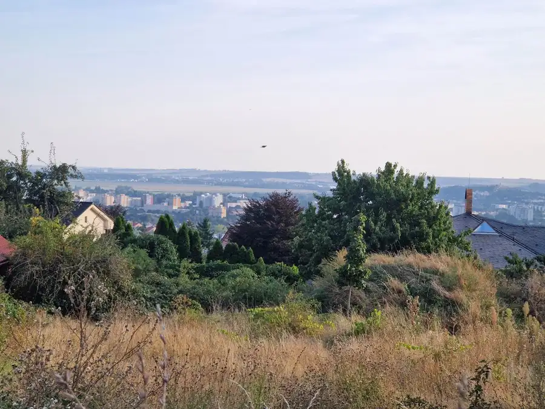

Na predaj novostavba RD bungalov Nitra - Nitrianske Hrnčiarovce
Nitra
- Plocha100 m²
- StavNovostavba
- VlastníctvoOsobné
- Energetická triedaA
O nehnuteľnosti
Na predaj moderný 4-izbový rodinný dom v Nitre – Nitrianskych Hrnčiarovciach na Jeleneckej ulici. Ak hľadáte pokojné, štýlové a komfortné bývanie na úrovni, tento bungalov vás osloví hneď pri prvej návšteve. Dom ponúka príjemnú atmosféru, dostatok svetla a výhľad, ktorý robí každý deň krajším.Úžitková plocha domu je 100 m² a nachádza sa na pozemku o výmere 550 m². Lokalita je tichá, bezpečná a veľmi obľúbená, ideálna pre rodinu aj pre ľudí, ktorí túžia po kombinácii kľudu a rýchlej dostupnosti do centra Nitry.Dom disponuje štyrmi priestrannými izbami, priestrannou terasou ideálnou na rannú kávu či večerný oddych, modernou kuchyňou s komorou a kúpeľňou s kvalitným vybavením. Podlahové kúrenie v celom dome zabezpečuje maximálny komfort počas celého roka. Parkovanie je bezproblémové, priamo na pozemku je miesto pre viacero áut.Technické riešenia domu sú moderné a úsporné. K dispozícii je voda, elektrina 230 V aj 400 V a napojenie na obecnú kanalizáciu. Vďaka efektívnym technológiám sú prevádzkové náklady veľmi nízke. Tehlová konštrukcia domu a rovinatý pozemok ponúkajú praktické a pohodlné bývanie.Dom je k dispozícii ihneď. Cena predaja je na dopyt v realitnej kancelárii. Ak vás táto ponuka zaujala a chcete si dom pozrieť osobne, kontaktujte ma na čísle +421 905 449 599 alebo mailom konde@finprofitgroup.sk . Rád vám poskytnem viac informácií alebo dohodnem obhliadku.
Parametre
| Doprava | MHD, Cyklistická infraštruktúra, Cesta |
|---|---|
| Druh | Rodinný dom |
| Druh domu | Bungalov |
| Dátum zverejnenia | 16. 11. 2025 |
| Energetický certifikát budovy | A |
| Plocha pozemku | 550 m² |
| Podpivničenie | Nedostupné |
| Počet izieb / miestností | 4 |
| Počet kúpeľní | 1 |
| Počet nadzemných podlaží | 1 |
| Počet spální | 1 |
| Počet vonkajších parkovacích miest | 5 |
| Príprava teplej vody | El. akumulačný boiler |
| Rok kolaudácie | 2024 |
| Rok výstavby | 2024 |
| Stav nehnuteľnosti | Novostavba |
| Terás | 1 |
| Terén pozemku | Rovinatý |
| Typ | Predaj |
| Typ konštrukcie | Tehlová |
| Vlastníctvo | Osobné |
| Vybavenie | Špajza, Terasa, Vonkajšie parkovacie miesto, Vyhradené parkovanie, Záhrada |
| Vybavenie objektu | Štandardné |
| Vykurovanie | Podlahové |
| Zariadenie | Čiastočne zariadené |
| Zastavaná plocha | 120 m² |
| Zdroj tepla | El. priamo-vykurovacie telesá |
| Úžitková plocha | 100 m² |
Kde to je


Mohlo by Vás zaujímať
 DomNové10
1 200 €Na prenájom RD novostavba - bungalov Nitra - Nitrianske hrnčiarovce
Nitra
100 m²
Na prenájom moderný 4-izbový rodinný dom v Nitre – Nitrianskych Hrnčiarovciach na Jeleneckej ulici. Ak hľadáte pokojné, štýlové a komfortné bývanie…
DomNové10
1 200 €Na prenájom RD novostavba - bungalov Nitra - Nitrianske hrnčiarovce
Nitra
100 m²
Na prenájom moderný 4-izbový rodinný dom v Nitre – Nitrianskych Hrnčiarovciach na Jeleneckej ulici. Ak hľadáte pokojné, štýlové a komfortné bývanie…

PozemokNové4 139 000 €Na predaj pozemok s výhľadom stavebné povolenie Zobor Nitra Nitra 620 m² Ponúkame Vám na predaj pozemok v Nitre, Višnová ulicaPlocha pozemku: 620 m²Charakter pozemku: SvahovitýPrístupová cesta: DláždenáDostupné všetky…
PozemokNové4 Cena dohodouNa predaj pozemok s krásnym výhľadom na mesto, stavebné povolenie, lokalita Zobor - Nitra Nitra 620 m² Ponúkame Vám na predaj pozemok v Nitre, Višnová ulicaPlocha pozemku: 620 m²Charakter pozemku: SvahovitýPrístupová cesta: DláždenáDostupné všetky…